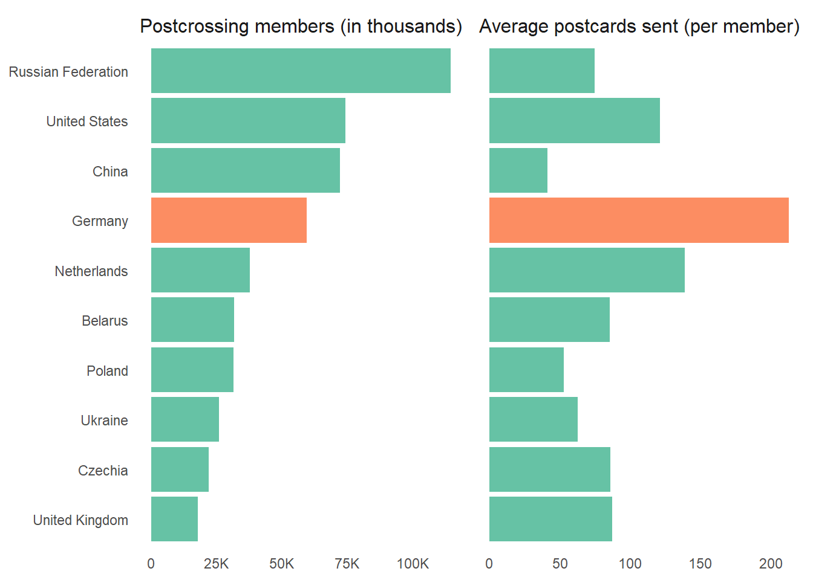
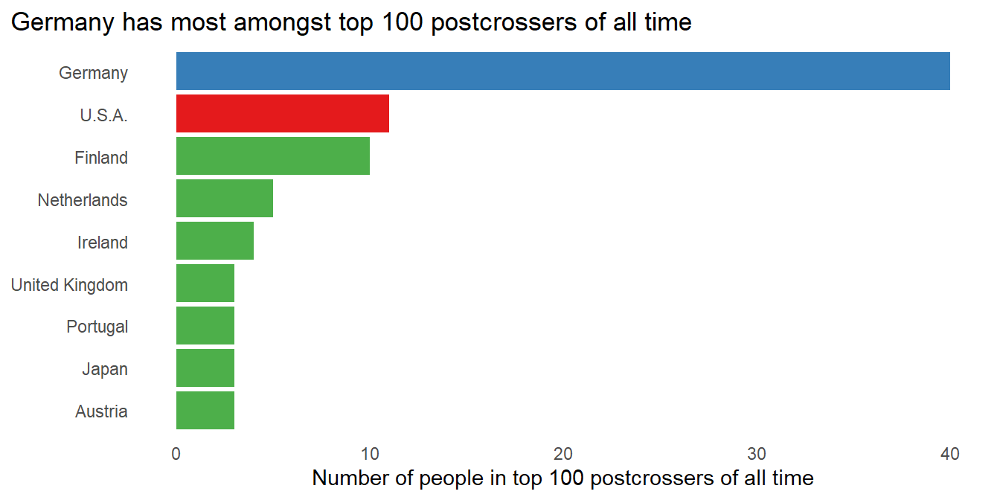
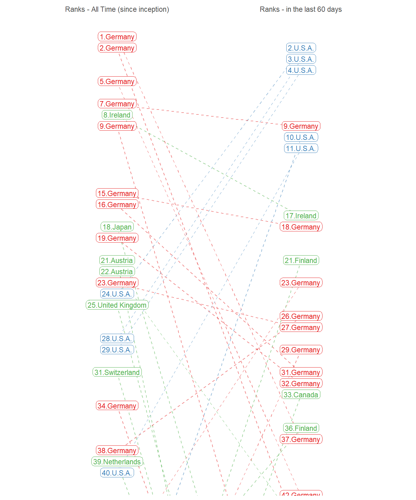

Data from the Postcrossing.com and the World Bank DataBank.
Today, we’re embarking on a journey through the captivating realm of Postcrossing.com – the global hub where postcards find their way to far-flung corners of the Earth.
Ever wondered who’s behind those postcards, where they’re coming from, and why some countries send more postcards than others? We’re about to dive headfirst into a treasure trove of statistics that will reveal who the Postcrossing community truly is.
First, an overview of the World of postcards and post-crossers:
Percentage of country’s population that uses postcrossing.com
Total Postcards Sent by people from each Country
Average number of postcards sent by each member in a country
The complete data on the postcards sent by Postcrossers across the globe:
As we can see, postcrossing is most popular in European countries: –
| Country Name | Members | Postcards Sent | Total Population | Percentage Poulation Postcrossing |
|---|---|---|---|---|
| Belarus | 31,772 | 2,717,290 | 9,208,701 | 0.35% |
| Finland | 16,639 | 4,242,933 | 5,556,880 | 0.30% |
| Lithuania | 7,451 | 816,816 | 2,833,000 | 0.26% |
| Netherlands | 37,740 | 5,228,890 | 17,703,090 | 0.21% |
| Czechia | 21,956 | 1,884,859 | 10,526,073 | 0.21% |
Germans have sent the most postcards

A closer look at Germany vs. other top postcrossing nations.
While Germany doesn’t have the maximum number of members on postcrossing, it makes up by sending more postcards on average, per member.

In fact, the following countries have higher percentage of their population registered as members on postcrossing. But, Germans make up for that by a combination of more postcard sent per person and a larger population.

Do the elderly send more postcards? Or, is it due to some other underlying cause?
When we look at the relation of postcards sent per member to the ageing of population in countries, we find: –
Countries with more elderly population also send more postcards, on average
Countries with higher proportion of young people in the population send fewer postcards per member, on average.
However, as we will see later, wealth (GDP per capita) explains the postcard numbers better.
And, we take a closer look at the top 100 postcrossers - of all time and of last 60 days: –

Looking closely at the postcrossers who figure both in the Top 100 of all time and Top 100 of last 60 days, we find that in the top 100, Americans are rising in ranks lately. Amongst users who figure in both the all time top 100 and last 60 days lists of top 100, Americans have moved up and Germans have fallen in ranks.

Finally, let’s delve into other indicators that could explain why some countries send more postcards than others !
We use the following variables as predictors in our model to predict the Average number of postcards sent by a member in each country: –
Age dependency ratio, old (% of working-age population),
Population ages 65 and above (% of total population),
Population ages 0-14 (% of total population),
GDP per capita (current US$)
When we analyze the predictors, the techincal results are shown below. It seems that only the GDP per capita correlates with the Average number of postcards sent by a member in each country. On the contrary, being elderly or young has no correlation with the Average number of postcards sent.
| Average number of postcards sent by each member | ||||||||
| Bi-variable models | Two variables | All vars | ||||||
| (1) | (2) | (3) | (4) | (5) | (6) | (7) | (8) | |
| Age dependency ratio, old (% of working-age population) | 2.1*** | 1.1 | 7.2 | |||||
| (0.6) | (0.7) | (11.2) | ||||||
| Population ages 65 and above (% of total population) | 3.3*** | 1.6 | -9.5 | |||||
| (1.0) | (1.1) | (19.0) | ||||||
| Population ages 0-14 (% of total population) | -2.0*** | -2.0*** | -0.5 | 0.1 | ||||
| (0.7) | (0.7) | (0.9) | (2.0) | |||||
| Population ages 0-14 (% of total population) | 0.001*** | 0.001*** | 0.001*** | 0.001*** | ||||
| (0.000) | (0.000) | (0.000) | (0.000) | |||||
| Adjusted R2 | 0.1 | 0.1 | 0.04 | 0.04 | 0.1 | 0.1 | 0.1 | 0.1 |
| F Statistic | 11.4*** | 11.1*** | 7.5*** | 7.5*** | 8.8*** | 9.8*** | 9.9*** | 5.1*** |
| Note: | p<0.1; p<0.05; p<0.01 | |||||||
Thus, the most important correlation of Average number of postcards sent by a member is with wealth, the GDP per capita. This relation is depicted below in Figure 1 .
Now, lets try to see what could explain the different number of members in different countries, i.e. Percentage of the population that is registered on postcrossing.com. We see in the table below that the most important predictor of postcrossing member’s proportion in a population is the share of elderly population. Also, we see the fast growing populations have lower postcrossing members.
All this strongly indicates that number of postcrossing members is correlated with an elderly population, and a slow growing population.
| Postcrossing members as a proportion of population | ||||||||
| One covariate models | Two Covariates | All covariates | ||||||
| (1) | (2) | (3) | (4) | (5) | (6) | (7) | (8) | |
| GDP per capita (current US) | 0.000*** | 0.000 | 0.000*** | -0.000 | ||||
| (0.000) | (0.000) | (0.000) | (0.000) | |||||
| Employment to population ratio, 15+, total (%) (modeled ILO estimate) | 0.00000 | 0.00000 | ||||||
| (0.00000) | (0.00000) | |||||||
| Population ages 65 and above (% of total population) | 0.00004*** | 0.00003*** | 0.00005*** | |||||
| (0.00001) | (0.00001) | (0.00001) | ||||||
| Population growth (annual %) | -0.0001*** | -0.0001** | 0.0001* | |||||
| (0.00003) | (0.00003) | (0.00004) | ||||||
| Population, total | -0.000 | -0.000 | ||||||
| (0.000) | (0.000) | |||||||
| Adjusted R2 | 0.083 | 0.0002 | 0.238 | 0.044 | -0.002 | 0.234 | 0.107 | 0.248 |
| F Statistic | 15.270*** | 1.034 | 49.998*** | 8.282*** | 0.667 | 24.966*** | 10.387*** | 11.379*** |
| Note: | p<0.1; p<0.05; p<0.01 | |||||||
Lastly, some interesting correlations: –
There seems to be no apparent co-relation between the number of people within a country using postcrossing, and the average number of postcards sent by each person.
However, as the percentage of population using postcrossing grows, so does the average number of postcards sent by each person.
The bottom line: –
Postcrossing is most popular in nordic and eastern European countries, and catching up in USA and China.
Countries with higher percentage of elderly people also have higher percentage of population registered on postcrossing.
Being elderly or young has no correlation with the number of postcards sent. Instead, it is wealth (GDP per capita) that correlates with the number of postcards sent on average by a member, in a country.
Happy postcrossing on the World Postcards Day - October 1!